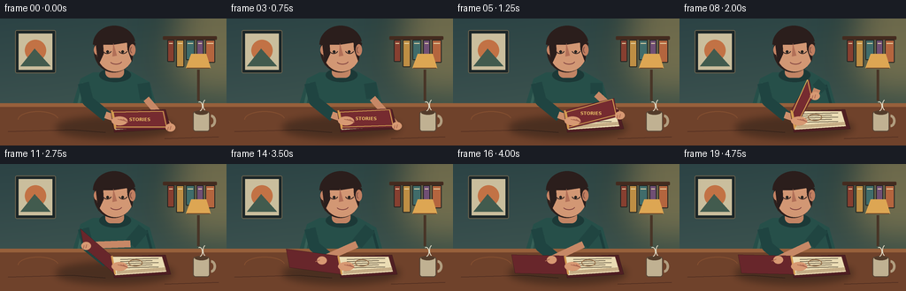
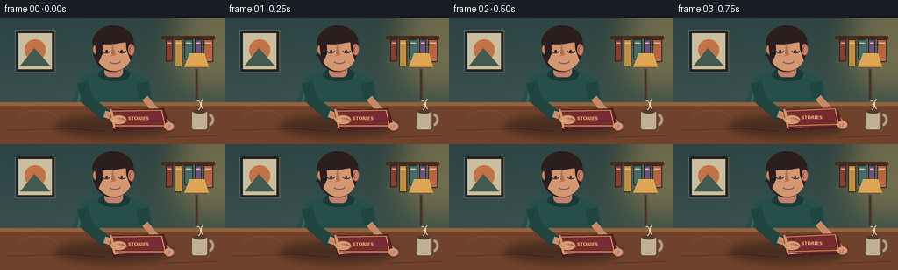

CODING AGENTS AS PIXEL WORLD MODELS
traex/GPT-5.6-Sol · motion_rationality_0046
点击播放 · 原生 RGB 像素
逐轮保存的候选
回放视频、检查图与代码变化。
每份候选均可单独播放。实际图片检查记录在下方工具轨迹中。
候选 01播放与检查图
点击播放 · 原生 RGB 像素


展开代码变化
--- 上一保存版本
+++ 本次保存版本
@@ -0,0 +1,194 @@
+from pathlib import Path
+import math
+import numpy as np
+from PIL import Image, ImageDraw, ImageFont, ImageFilter
+import artifact_io
+
+W,H,N = 256,144,20
+S=4
+SW,SH=W*S,H*S
+
+def scp(p): return tuple(int(round(v*S)) for v in p)
+def pts(ps): return [scp(p) for p in ps]
+
+def font(size,bold=False):
+ path='/usr/share/fonts/truetype/dejavu/DejaVuSans-Bold.ttf' if bold else '/usr/share/fonts/truetype/dejavu/DejaVuSans.ttf'
+ return ImageFont.truetype(path,size*S)
+
+def smooth(x):
+ x=max(0,min(1,x)); return x*x*(3-2*x)
+
+def render(i):
+ # warm, softly graded wall
+ yy=np.arange(SH)[:,None]
+ xx=np.arange(SW)[None,:]
+ base=np.zeros((SH,SW,3),dtype=np.uint8)
+ base[:,:,0]=np.clip(44 + yy*20/SH + xx*3/SW,0,255)
+ base[:,:,1]=np.clip(67 + yy*19/SH + xx*5/SW,0,255)
+ base[:,:,2]=np.clip(69 + yy*13/SH,0,255)
+ im=Image.fromarray(base,'RGB')
+ d=ImageDraw.Draw(im)
+ # soft pool of lamplight on wall
+ glow=Image.new('RGBA',(SW,SH),(0,0,0,0)); gd=ImageDraw.Draw(glow)
+ gd.ellipse(scp((180,-17,286,99)), fill=(243,178,88,80))
+ glow=glow.filter(ImageFilter.GaussianBlur(22*S)); im=Image.alpha_composite(im.convert('RGBA'),glow)
+ d=ImageDraw.Draw(im)
+ # framed print
+ d.rounded_rectangle(scp((17,13,63,62)),radius=2*S,fill=(27,38,40,255),outline=(105,98,78,255),width=S)
+ d.rectangle(scp((21,17,59,58)),fill=(202,190,157,255))
+ d.ellipse(scp((28,24,52,48)),fill=(194,114,69,255))
+ d.polygon(pts([(23,54),(39,34),(57,54)]),fill=(66,91,78,255))
+ # shelf and books
+ d.rounded_rectangle(scp((184,20,245,24)),radius=S,fill=(68,43,31,255))
+ colors=[(135,63,48),(190,142,68),(64,108,106),(112,79,116),(180,101,62)]
+ bx=189
+ for j,(bw,bh) in enumerate([(8,25),(9,31),(10,23),(8,29),(11,26)]):
+ c=colors[j]
+ d.rounded_rectangle(scp((bx,24,bx+bw,24+bh)),radius=S,fill=c+(255,),outline=(35,37,35,180),width=S)
+ d.line(pts([(bx+2,28),(bx+bw-2,28)]),fill=(232,214,169,150),width=S)
+ bx+=bw+2
+ # lamp
+ d.line(pts([(224,58),(224,93)]),fill=(72,53,39,255),width=3*S)
+ d.polygon(pts([(210,56),(238,56),(233,40),(216,40)]),fill=(221,166,83,255))
+ d.line(pts([(211,56),(237,56)]),fill=(112,73,42,255),width=S)
+ # person torso behind desk
+ d.polygon(pts([(91,68),(105,61),(148,60),(169,72),(180,111),(78,111)]),fill=(38,79,73,255))
+ # sweater fabric highlight and collar
+ d.line(pts([(94,73),(87,104)]),fill=(55,96,87,255),width=3*S)
+ d.line(pts([(165,75),(173,105)]),fill=(28,62,60,255),width=3*S)
+ d.ellipse(scp((112,56,148,72)),fill=(28,57,55,255))
+ # neck
+ d.rounded_rectangle(scp((119,49,140,67)),radius=6*S,fill=(194,132,100,255))
+ # head shadow then face
+ d.ellipse(scp((106,12,151,61)),fill=(45,31,28,255))
+ d.ellipse(scp((109,14,151,60)),fill=(210,151,116,255))
+ d.ellipse(scp((106,30,113,41)),fill=(196,130,99,255))
+ # hair mass, side lock
+ d.pieslice(scp((105,8,153,51)),180,350,fill=(43,30,28,255))
+ d.polygon(pts([(108,27),(111,53),(117,40),(116,20)]),fill=(43,30,28,255))
+ d.polygon(pts([(143,17),(153,28),(149,49),(144,35)]),fill=(43,30,28,255))
+ # ear and face shading
+ d.ellipse(scp((146,29,153,42)),fill=(192,126,96,255))
+ d.arc(scp((147,32,151,39)),90,260,fill=(125,79,67,255),width=S)
+ d.polygon(pts([(128,28),(132,42),(127,43)]),fill=(178,112,88,255))
+ # eyes looking down, blink once naturally
+ blink = (i==10)
+ if blink:
+ d.arc(scp((116,32,126,39)),5,175,fill=(56,40,37,255),width=S)
+ d.arc(scp((134,32,144,39)),5,175,fill=(56,40,37,255),width=S)
+ else:
+ d.arc(scp((116,32,126,40)),15,165,fill=(55,39,36,255),width=S)
+ d.arc(scp((134,32,144,40)),15,165,fill=(55,39,36,255),width=S)
+ d.ellipse(scp((120,36,123,39)),fill=(38,34,31,255))
+ d.ellipse(scp((137,36,140,39)),fill=(38,34,31,255))
+ d.arc(scp((124,44,138,52)),15,155,fill=(132,70,66,255),width=S)
+ # desk, with edge and grain
+ d.rectangle(scp((0,96,256,144)),fill=(111,66,43,255))
+ d.rectangle(scp((0,96,256,100)),fill=(151,96,59,255))
+ d.line(pts([(9,128),(82,126),(119,129)]),fill=(83,48,34,170),width=S)
+ d.line(pts([(186,136),(247,134)]),fill=(82,47,33,150),width=S)
+ d.arc(scp((20,105,66,124)),180,350,fill=(132,79,48,150),width=S)
+
+ # opening schedule: closed briefly, then a deliberate smooth swing and settle
+ p=smooth((i-2)/14.0)
+ # slight overshoot/settle at the end
+ angle=math.radians(178*p)
+ hf=(126,104); hn=(130,125)
+ dx=60*math.cos(angle); dy=-38*math.sin(angle)
+ ff=(hf[0]+dx,hf[1]+dy); fn=(hn[0]+dx,hn[1]+dy)
+
+ # book/contact shadow, blurred
+ sh=Image.new('RGBA',(SW,SH),(0,0,0,0)); sd=ImageDraw.Draw(sh)
+ sd.ellipse(scp((63,111,196,136)),fill=(22,20,17,105))
+ sh=sh.filter(ImageFilter.GaussianBlur(4*S)); im=Image.alpha_composite(im,sh); d=ImageDraw.Draw(im)
+
+ # arms: stabilizing hand/arm at hinge, opening arm follows cover then releases
+ # left sleeve and forearm (behind book)
+ d.line(pts([(94,73),(99,93),(121,111)]),fill=(31,68,65,255),width=13*S,joint='curve')
+ d.line(pts([(119,109),(139,116)]),fill=(205,143,108,255),width=8*S)
+ # dynamic opening arm target
+ follow=min(p/0.72,1.0)
+ tx=fn[0]+2; ty=fn[1]-2
+ if p>0.72:
+ r=smooth((p-0.72)/0.28); tx=tx*(1-r)+111*r; ty=ty*(1-r)+108*r
+ ex=165-18*follow; ey=91-11*math.sin(math.pi*follow)
+ d.line(pts([(162,73),(ex,ey)]),fill=(32,69,65,255),width=14*S,joint='curve')
+ d.line(pts([(ex,ey),(tx,ty)]),fill=(199,136,102,255),width=8*S,joint='curve')
+
+ # stationary lower/back cover and page block on right
+ back=[(125,105),(187,103),(193,125),(129,129)]
+ d.polygon(pts(back),fill=(79,31,35,255),outline=(44,22,24,255))
+ pages=[(126,105),(183,105),(188,122),(130,126)]
+ d.polygon(pts(pages),fill=(235,220,180,255),outline=(166,136,99,255))
+ # layered page edges
+ for k in range(3):
+ yoff=k*1.3
+ d.line(pts([(132,124-yoff),(187,120-yoff)]),fill=(175,145,106,210),width=S)
+ # print on revealed right page; amount becomes clearer as cover rises
+ if p>0.08:
+ alpha=int(110+100*p)
+ for k in range(5):
+ yy2=108+k*2.4
+ xend=179-(k%2)*7
+ d.line(pts([(136,yy2),(xend,yy2-1.2)]),fill=(103,91,71,alpha),width=S)
+ d.ellipse(scp((145,108,161,116)),outline=(143,104,68,150),width=S)
+
+ # inside endpaper becomes visible as the cover passes vertical
+ if p>0.52:
+ q=smooth((p-0.52)/0.34)
+ inset_quad=[(126.5,105.2),(ff[0]*.97+hf[0]*.03,ff[1]*.97+hf[1]*.03),
+ (fn[0]*.96+hn[0]*.04,fn[1]*.96+hn[1]*.04),(129.5,124.5)]
+ d.polygon(pts(inset_quad),fill=(207,184,143,255),outline=(128,94,70,255))
+ if p>.72:
+ d.line(pts([(124,108),(ff[0]+5,ff[1]+3)]),fill=(150,119,83,170),width=S)
+
+ # moving front cover, visible surface/backside changes after edge-on
+ quad=[hf,ff,fn,hn]
+ front_side = p < .5
+ col=(118,43,48,255) if front_side else (104,38,43,255)
+ d.polygon(pts(quad),fill=col,outline=(48,21,24,255))
+ # gold border and title while readable on closed/front-facing portion
+ width_screen=abs(dx)
+ if front_side and width_screen>18:
+ inset=0.1
+ ih=(hf[0]+2,hf[1]+2); inn=(hn[0]+1,hn[1]-2)
+ iff=(ff[0]-2*math.copysign(1,dx),ff[1]+1); ifn=(fn[0]-2*math.copysign(1,dx),fn[1]-2)
+ d.line(pts([ih,iff,ifn,inn,ih]),fill=(210,165,83,220),width=S)
+ # title fades before severe perspective
+ if p<.34:
+ cx=(hf[0]+ff[0]+hn[0]+fn[0])/4; cy=(hf[1]+ff[1]+hn[1]+fn[1])/4
+ txt='STORIES'; fnt=font(5,True)
+ bb=d.textbbox((0,0),txt,font=fnt); tw=bb[2]-bb[0]
+ d.text((int(cx*S-tw/2),int((cy-3)*S)),txt,font=fnt,fill=(232,191,102,235))
+ # spine highlight
+ d.line(pts([hf,hn]),fill=(211,153,80,255),width=2*S)
+
+ # hands on top: steadying fingers and opening hand
+ skin=(215,153,115,255); skin_dark=(173,105,82,255)
+ d.ellipse(scp((126,111,144,121)),fill=skin)
+ for k in range(3):
+ d.line(pts([(133+k*3,114),(142+k*1.2,116+k*.7)]),fill=skin_dark,width=S)
+ # opener palm and fingers, gripping while following and relaxing afterward
+ d.ellipse(scp((tx-5,ty-4,tx+6,ty+5)),fill=skin)
+ if p<.76:
+ # fingers curl around outer corner
+ d.line(pts([(tx-2,ty),(fn[0]-1,fn[1]+2)]),fill=skin_dark,width=S)
+ d.line(pts([(tx+1,ty-1),(fn[0]+2,fn[1]+1)]),fill=skin_dark,width=S)
+ else:
+ d.line(pts([(tx-2,ty),(tx-7,ty+2)]),fill=skin_dark,width=S)
+
+ # cup at far right adds depth
+ d.rounded_rectangle(scp((218,105,237,128)),radius=3*S,fill=(192,177,146,255),outline=(87,69,54,255),width=S)
+ d.ellipse(scp((220,104,235,109)),fill=(83,60,43,255))
+ d.arc(scp((233,109,244,123)),270,90,fill=(177,157,127,255),width=3*S)
+ # subtle steam
+ d.arc(scp((222,94,229,105)),250,80,fill=(225,220,199,100),width=S)
+ d.arc(scp((229,92,235,104)),100,260,fill=(225,220,199,75),width=S)
+
+ return np.array(im.convert('RGB').resize((W,H),Image.Resampling.LANCZOS),dtype=np.uint8)
+
+def main():
+ frames=np.stack([render(i) for i in range(N)])
+ artifact_io.save(frames,Path(__file__).resolve().parent)
+
+if __name__=='__main__': main()
可观测工具轨迹
实际执行的命令与返回图片。
命令 1exit 0
/bin/bash -lc "cat prompt.txt && printf '\\n---RULES---\\n' && cat GENERATION_RULES.md && printf '\\n---SPEC---\\n' && cat task_spec.json"
命令 2exit 0
/bin/bash -lc "find . -maxdepth 2 -type f -printf '%p\\n' | sort | head -200"
命令 3exit 0
/bin/bash -lc 'cat artifact_io.py'
命令 4exit 0
/bin/bash -lc "cat > generate.py <<'PY'
from pathlib import Path
import math
import numpy as np
from PIL import Image, ImageDraw, ImageFont, ImageFilter
import artifact_io
W,H,N = 256,144,20
S=4
SW,SH=W*S,H*S
def scp(p): return tuple(int(round(v*S)) for v in p)
def pts(ps): return [scp(p) for p in ps]
def font(size,bold=False):
path='/usr/share/fonts/truetype/dejavu/DejaVuSans-Bold.ttf' if bold else '/usr/share/fonts/truetype/dejavu/DejaVuSans.ttf'
return ImageFont.truetype(path,size*S)
def smooth(x):
x=max(0,min(1,x)); return x*x*(3-2*x)
def render(i):
# warm, softly graded wall
yy=np.arange(SH)[:,None]
xx=np.arange(SW)[None,:]
base=np.zeros((SH,SW,3),dtype=np.uint8)
base[:,:,0]=np.clip(44 + yy*20/SH + xx*3/SW,0,255)
base[:,:,1]=np.clip(67 + yy*19/SH + xx*5/SW,0,255)
base[:,:,2]=np.clip(69 + yy*13/SH,0,255)
im=Image.fromarray(base,'RGB')
d=ImageDraw.Draw(im)
# soft pool of lamplight on wall
glow=Image.new('RGBA',(SW,SH),(0,0,0,0)); gd=ImageDraw.Draw(glow)
gd.ellipse(scp((180,-17,286,99)), fill=(243,178,88,80))
glow=glow.filter(ImageFilter.GaussianBlur(22*S)); im=Image.alpha_composite(im.convert('RGBA'),glow)
d=ImageDraw.Draw(im)
# framed print
d.rounded_rectangle(scp((17,13,63,62)),radius=2*S,fill=(27,38,40,255),outline=(105,98,78,255),width=S)
d.rectangle(scp((21,17,59,58)),fill=(202,190,157,255))
d.ellipse(scp((28,24,52,48)),fill=(194,114,69,255))
d.polygon(pts([(23,54),(39,34),(57,54)]),fill=(66,91,78,255))
# shelf and books
d.rounded_rectangle(scp((184,20,245,24)),radius=S,fill=(68,43,31,255))
colors=[(135,63,48),(190,142,68),(64,108,106),(112,79,116),(180,101,62)]
bx=189
for j,(bw,bh) in enumerate([(8,25),(9,31),(10,23),(8,29),(11,26)]):
c=colors[j]
d.rounded_rectangle(scp((bx,24,bx+bw,24+bh)),radius=S,fill=c+(255,),outline=(35,37,35,180),width=S)
d.line(pts([(bx+2,28),(bx+bw-2,28)]),fill=(232,214,169,150),width=S)
bx+=bw+2
# lamp
d.line(pts([(224,58),(224,93)]),fill=(72,53,39,255),width=3*S)
d.polygon(pts([(210,56),(238,56),(233,40),(216,40)]),fill=(221,166,83,255))
d.line(pts([(211,56),(237,56)]),fill=(112,73,42,255),width=S)
# person torso behind desk
d.polygon(pts([(91,68),(105,61),(148,60),(169,72),(180,111),(78,111)]),fill=(38,79,73,255))
# sweater fabric highlight and collar
d.line(pts([(94,73),(87,104)]),fill=(55,96,87,255),width=3*S)
d.line(pts([(165,75),(173,105)]),fill=(28,62,60,255),width=3*S)
d.ellipse(scp((112,56,148,72)),fill=(28,57,55,255))
# neck
d.rounded_rectangle(scp((119,49,140,67)),radius=6*S,fill=(194,132,100,255))
# head shadow then face
d.ellipse(scp((106,12,151,61)),fill=(45,31,28,255))
d.ellipse(scp((109,14,151,60)),fill=(210,151,116,255))
d.ellipse(scp((106,30,113,41)),fill=(196,130,99,255))
# hair mass, side lock
d.pieslice(scp((105,8,153,51)),180,350,fill=(43,30,28,255))
d.polygon(pts([(108,27),(111,53),(117,40),(116,20)]),fill=(43,30,28,255))
d.polygon(pts([(143,17),(153,28),(149,49),(144,35)]),fill=(43,30,28,255))
# ear and face shading
d.ellipse(scp((146,29,153,42)),fill=(192,126,96,255))
d.arc(scp((147,32,151,39)),90,260,fill=(125,79,67,255),width=S)
d.polygon(pts([(128,28),(132,42),(127,43)]),fill=(178,112,88,255))
# eyes looking down, blink once naturally
blink = (i==10)
if blink:
d.arc(scp((116,32,126,39)),5,175,fill=(56,40,37,255),width=S)
d.arc(scp((134,32,144,39)),5,175,fill=(56,40,37,255),width=S)
else:
d.arc(scp((116,32,126,40)),15,165,fill=(55,39,36,255),width=S)
d.arc(scp((134,32,144,40)),15,165,fill=(55,39,36,255),width=S)
d.ellipse(scp((120,36,123,39)),fill=(38,34,31,255))
d.ellipse(scp((137,36,140,39)),fill=(38,34,31,255))
d.arc(scp((124,44,138,52)),15,155,fill=(132,70,66,255),width=S)
# desk, with edge and grain
d.rectangle(scp((0,96,256,144)),fill=(111,66,43,255))
d.rectangle(scp((0,96,256,100)),fill=(151,96,59,255))
d.line(pts([(9,128),(82,126),(119,129)]),fill=(83,48,34,170),width=S)
d.line(pts([(186,136),(247,134)]),fill=(82,47,33,150),width=S)
d.arc(scp((20,105,66,124)),180,350,fill=(132,79,48,150),width=S)
# opening schedule: closed briefly, then a deliberate smooth swing and settle
p=smooth((i-2)/14.0)
# slight overshoot/settle at the end
angle=math.radians(178*p)
hf=(126,104); hn=(130,125)
dx=60*math.cos(angle); dy=-38*math.sin(angle)
ff=(hf[0]+dx,hf[1]+dy); fn=(hn[0]+dx,hn[1]+dy)
# book/contact shadow, blurred
sh=Image.new('RGBA',(SW,SH),(0,0,0,0)); sd=ImageDraw.Draw(sh)
sd.ellipse(scp((63,111,196,136)),fill=(22,20,17,105))
sh=sh.filter(ImageFilter.GaussianBlur(4*S)); im=Image.alpha_composite(im,sh); d=ImageDraw.Draw(im)
# arms: stabilizing hand/arm at hinge, opening arm follows cover then releases
# left sleeve and forearm (behind book)
d.line(pts([(94,73),(99,93),(121,111)]),fill=(31,68,65,255),width=13*S,joint='curve')
d.line(pts([(119,109),(139,116)]),fill=(205,143,108,255),width=8*S)
# dynamic opening arm target
follow=min(p/0.72,1.0)
tx=fn[0]+2; ty=fn[1]-2
if p>0.72:
r=smooth((p-0.72)/0.28); tx=tx*(1-r)+111*r; ty=ty*(1-r)+108*r
ex=165-18*follow; ey=91-11*math.sin(math.pi*follow)
d.line(pts([(162,73),(ex,ey)]),fill=(32,69,65,255),width=14*S,joint='curve')
d.line(pts([(ex,ey),(tx,ty)]),fill=(199,136,102,255),width=8*S,joint='curve')
# stationary lower/back cover and page block on right
back=[(125,105),(187,103),(193,125),(129,129)]
d.polygon(pts(back),fill=(79,31,35,255),outline=(44,22,24,255))
pages=[(126,105),(183,105),(188,122),(130,126)]
d.polygon(pts(pages),fill=(235,220,180,255),outline=(166,136,99,255))
# layered page edges
for k in range(3):
yoff=k*1.3
d.line(pts([(132,124-yoff),(187,120-yoff)]),fill=(175,145,106,210),width=S)
# print on revealed right page; amount becomes clearer as cover rises
if p>0.08:
alpha=int(110+100*p)
for k in range(5):
yy2=108+k*2.4
xend=179-(k%2)*7
d.line(pts([(136,yy2),(xend,yy2-1.2)]),fill=(103,91,71,alpha),width=S)
d.ellipse(scp((145,108,161,116)),outline=(143,104,68,150),width=S)
# inside endpaper becomes visible as the cover passes vertical
if p>0.52:
q=smooth((p-0.52)/0.34)
inset_quad=[(126.5,105.2),(ff[0]*.97+hf[0]*.03,ff[1]*.97+hf[1]*.03),
(fn[0]*.96+hn[0]*.04,fn[1]*.96+hn[1]*.04),(129.5,124.5)]
d.polygon(pts(inset_quad),fill=(207,184,143,255),outline=(128,94,70,255))
if p>.72:
d.line(pts([(124,108),(ff[0]+5,ff[1]+3)]),fill=(150,119,83,170),width=S)
# moving front cover, visible surface/backside changes after edge-on
quad=[hf,ff,fn,hn]
front_side = p < .5
col=(118,43,48,255) if front_side else (104,38,43,255)
d.polygon(pts(quad),fill=col,outline=(48,21,24,255))
# gold border and title while readable on closed/front-facing portion
width_screen=abs(dx)
if front_side and width_screen>18:
inset=0.1
ih=(hf[0]+2,hf[1]+2); inn=(hn[0]+1,hn[1]-2)
iff=(ff[0]-2*math.copysign(1,dx),ff[1]+1); ifn=(fn[0]-2*math.copysign(1,dx),fn[1]-2)
d.line(pts([ih,iff,ifn,inn,ih]),fill=(210,165,83,220),width=S)
# title fades before severe perspective
if p<.34:
cx=(hf[0]+ff[0]+hn[0]+fn[0])/4; cy=(hf[1]+ff[1]+hn[1]+fn[1])/4
txt='STORIES'; fnt=font(5,True)
bb=d.textbbox((0,0),txt,font=fnt); tw=bb[2]-bb[0]
d.text((int(cx*S-tw/2),int((cy-3)*S)),txt,font=fnt,fill=(232,191,102,235))
# spine highlight
d.line(pts([hf,hn]),fill=(211,153,80,255),width=2*S)
# hands on top: steadying fingers and opening hand
skin=(215,153,115,255); skin_dark=(173,105,82,255)
d.ellipse(scp((126,111,144,121)),fill=skin)
for k in range(3):
d.line(pts([(133+k*3,114),(142+k*1.2,116+k*.7)]),fill=skin_dark,width=S)
# opener palm and fingers, gripping while following and relaxing afterward
d.ellipse(scp((tx-5,ty-4,tx+6,ty+5)),fill=skin)
if p<.76:
# fingers curl around outer corner
d.line(pts([(tx-2,ty),(fn[0]-1,fn[1]+2)]),fill=skin_dark,width=S)
d.line(pts([(tx+1,ty-1),(fn[0]+2,fn[1]+1)]),fill=skin_dark,width=S)
else:
d.line(pts([(tx-2,ty),(tx-7,ty+2)]),fill=skin_dark,width=S)
# cup at far right adds depth
d.rounded_rectangle(scp((218,105,237,128)),radius=3*S,fill=(192,177,146,255),outline=(87,69,54,255),width=S)
d.ellipse(scp((220,104,235,109)),fill=(83,60,43,255))
d.arc(scp((233,109,244,123)),270,90,fill=(177,157,127,255),width=3*S)
# subtle steam
d.arc(scp((222,94,229,105)),250,80,fill=(225,220,199,100),width=S)
d.arc(scp((229,92,235,104)),100,260,fill=(225,220,199,75),width=S)
return np.array(im.convert('RGB').resize((W,H),Image.Resampling.LANCZOS),dtype=np.uint8)
def main():
frames=np.stack([render(i) for i in range(N)])
artifact_io.save(frames,Path(__file__).resolve().parent)
if __name__=='__main__': main()
PY
python generate.py
ls -lh pixels.npz inspection.png index.html frames/00.png frames/19.png"命令 5exit 1
/bin/bash -lc "python - <<'PY'
import numpy as np
z=np.load('pixels.npz')['pixels']
print('packed tensor:',z.shape,z.dtype)
# per-transition changed-pixel counts and mean RGB delta
f=np.stack([np.array(__import__('PIL').Image.open(f'frames/{i:02d}.png')) for i in range(20)])
for i in range(1,20):
d=np.abs(f[i].astype(int)-f[i-1].astype(int))
print(f'{i-1:02d}->{i:02d}: changed={np.any(d,2).sum():5d}, mean_delta={d.mean():.3f}')
PY"命令 6exit 0
/bin/bash -lc "python - <<'PY'
import numpy as np
from PIL import Image
f=np.stack([np.array(Image.open(f'frames/{i:02d}.png').convert('RGB')) for i in range(20)])
assert f.shape==(20,144,256,3) and f.dtype==np.uint8
print('valid',f.shape,f.dtype)
for i in range(1,20):
d=np.abs(f[i].astype(np.int16)-f[i-1].astype(np.int16))
print(f'{i-1:02d}->{i:02d}: changed={np.any(d,2).sum():5d}, mean={d.mean():.2f}')
PY"视觉工具实际返回图片 1

保存候选 1 份；完成命令 6 次；可验证图片返回 1 张。原始 API 响应与完整日志保留在本地。